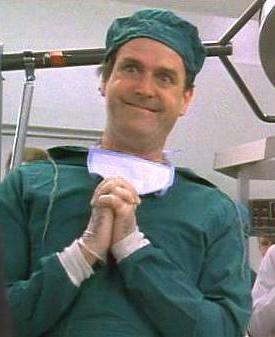

Thank You
Back to Help

- To NorthStar, the inspiration for this entire project.
- To all the programmers/artists whose works have made this
project possible.
- To my Dad and my high school programming teacher for helping
inspire a skill which has served me well in my current
activities.
- Thank you to my students at North Star. If not for you,
I never would have thought of teaching programming, and never
would have written this program.
- Thanks to Robert Tate, for helping debug throughout the
creation of 1.0.0.
- Thank you to the users of this program.
- Thanks to the supporters of this programmer, and of
North Star. Your donations are greatly appreciated.
- And thanks to Monty Python for inspiration (and being chill
about me using their images.) As additional thanks, I exhort
you to spend some quality time watching Monty Python's
Flying Circus and their many quality films.
- One more: Thanks to the Open Source Community, and the
advocates of Free Software and Open Source.
If not for you, I would not even have been able to afford a
computer, let alone create this program.